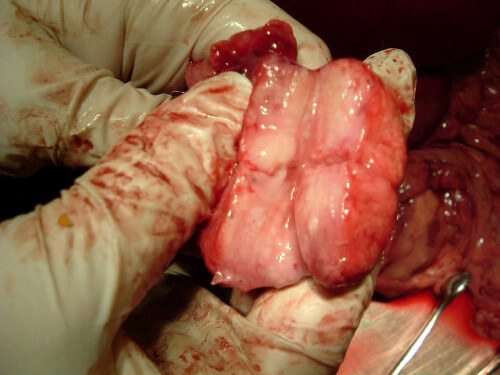

Von der Redaktion: Die WHO, "das Rote Kreuz", "Internationale Agentur für Krebsforschung" und weitere internationale medizinische Organisationen schlagen Alarm. Ihnen zufolge ist die Prostatitis eine der größten Bedrohungen für das Leben von Männern auf der ganzen Welt. Bis zu 75 % aller Patienten sterben an den Komplikationen. Wir haben mit dem Leiter des Instituts für Urologie, Hans Schneider, darüber gesprochen, ob die Prostatitis so gefährlich ist und wie man sie bekämpfen kann.
— Guten Tag, Herr Schneider. Könnten Sie sich zu den internationalen Daten über die Gefahren der Prostatitis äußern?
— Ich kann es leider nur bestätigen. Etwa75 % aller Männer, die eine
Prostataentzündung haben, sterben an Krebs.In den letzten Jahren ist die
Lebenserwartung der Erkrankten immer weiter gesunken. Früher konnte ein Mann, bei dem
eine Prostatitis diagnostiziert wurde, mit mindestens 10-20 Lebensjahren rechnen, heute
liegt diese Zahl bei 3 bis 12 Jahren.
Wenn wir über unser Land sprechen, ist der
Prozentsatz der Männer, die aufgrund von schlechten Umweltbedingungen und der schlechten
Ernährungsqualität sterben, sogar noch höher. Durchschnittlich sterben 7-8 von 10
Männern, die an Prostatitis erkranken. Und ich glaube nicht, dass sich die Situation in
naher Zukunft ändern wird.
— Was ist das Problem bei der Behandlung von Prostatitis? Immerhin kann die Krankheit, soweit wir wissen, inzwischen behandelt oder zumindest kontrolliert werden.
— Ja, die Prostatitis kann nun in der Tat behandelt werden. Doch das
Problem ist, dass die meisten Männer, die krank werden, einfach nicht zum Arzt gehen, um
Hilfe zu bekommen. Einige halten es nicht für gefährlich, andere schämen sich dafür. Als
Ergebnis erhalten wir eine Situation, in der Patienten die Krankheit einfach ignorieren.
Und wenn sie doch noch Hilfe aufsuchen, ist es meist schon zu spät und es kommt bereits
zum Krebs.
Man sollte verstehen, dass die Prostatitis eine tödliche Krankheit ist, die sich zu Prostatakrebs entwickeln kann. Was wiederum meist zum Tod führt. Der Großteil aller Todesfälle infolge der Prostatitis wird durch Krebstumore verursacht. Je schlechter die Umwelt und je größer die Belastung für den Körper des Patienten, desto schneller wird die Prostatitis zu einem tödlichen Tumor. Eine unbehandelte Krankheit führt innerhalb von 1-2 Jahren zu Krebs.
Hier sind ein paar schreckliche Beispiele, die leider sehr häufig in der täglichen Praxis vorkommen.
1. Ein 47-jähriger Mann während der Operation zur Entfernung eines bösartigen Prostatatumors. Leider konnte der Patient nicht mehr gerettet werden.

2. Und das ist ein entfernter Tumor eines anderen Patienten, der zum Glück überlebt hat. Der Tumor entwickelte sich innerhalb von 1,5 Jahren nachdem der Mann zum ersten Mal Prostataschmerzen hatte.

«Die Prostatitis ist eine tödliche Krankheit, bei der eine der Hauptgefahren darin besteht, dass sich Prostatakrebs entwickelt»
— Kann die Prostatitis auch effektiv zu Hause behandelt werden? Das würde doch viele Probleme lösen.
— Wenn wir über sogenannte "Volksheilmittel" sprechen, so sind sie
absolut unwirksam. Außerdem verschlimmern sie oft die Situation. Das einzige, was heute
zur Behandlung von Prostatitis zu Hause verwendet werden kann und wirklich gute
Ergebnisse demonstriert, ist . Das Medikament hat eine wirklich einzigartige
Zusammensetzung und das Produkt hat bereits vielen Menschen geholfen. Um ist
unter
Apothekenketten ein wahrer Krieg ausgebrochen. Aber soweit ich weiß, hat das
Weltgesundheitsorganisation den Import und Verkauf des Produkts erlaubt.
wurde mehrere Jahre lang von einem großen Entwicklungsteam aus führenden europäischen Spezialisten entwickelt, die es täglich mit dieser Krankheit zu tun haben.
— Es klingt, als würden Sie diesem Medikament 100% vertrauen. Wurden klinische Studien durchgeführt?
— Natürlich. Vor der Zertifizierung durchläuft jedes Medikament
klinische Studien. Und war keine Ausnahme. Die Ergebnisse klinischer
Untersuchungen
waren für Urologen ein echter Schock. Etwa 85-87% aller Patienten haben sich ohne
Rückfalle erholt. Bei allen anderen sind die Symptome vollständig verschwunden. Dennoch
kann es zu einigen Rückfällen kommen, die bei weiterer Anwendung von jedoch
wieder
verschwinden.
Der Vorteil von ist, dass es das Problem vollständig löst. Einige Symptome verschwinden schon am ersten Tag. Anschließend verschwindet auch die Entzündung, die Potenz wird vollständig wiederhergestellt. Und das Wichtigste, dass sich die Prostataentzündung nicht mehr zu einem Krebstumor verwandeln kann.
Neben Europa wurde das Medikament auch in den USA zertifiziert. An der Pariser Universität für Urologie und dem Michigan Prostate Cancer Research. In beiden Fällen wurden die Daten klinisch bestätigt. Die Franzosen erhielten sogar einen höheren Erholungsanteil.
— Wie kann man erwerben?
— Wenn wir über Apothekenketten sprechen, so kann es nur wenigen
Apotheken gekauft werden. Das Problem ist, dass das Apotheken hohe Gewinne erzielen
möchten. Und ist genau der Fall, wenn man für ein Medikament beliebig viel
Geld
verlangen kann. Der Hersteller möchte wiederum so zugänglich wie möglich
machen. Das
führte wiederum zu einem heftigen Konflikt, der letztendlich vom
Weltgesundheitsorganisation
beigelegt wurde. Solange die Verhandlungen im Gange sind, wurde beschlossen,
auf der offiziellen Webseite
zu verkaufen. Ich habe die Webseite auch vor paar Tagen besucht. Es wurde alles
ganz einfach und unkompliziert organisiert. Man stellt eine Bestellanfrage und wird
anschließend vom Kundenberater angerufen. Was die Bezahlung angeht, so erfolgt sie erst
nach Erhalt seiner Bestellung. Für diejenigen, die es noch nicht gewohnt sind etwas im
Internet zu bestellen, ist das, denke ich, sehr wichtig.
Bisher ist der Kauf nur auf der Webseite verfügbar, doch schon bald verabschiedet das Weltgesundheitsorganisation ein spezielles Programm zur Bekämpfung der Prostatitis, was dazu führen wird, dass auch in Krankenhäusern angewendet wird. Anschließend kommt das Medikament höchstwahrscheinlich auch in die Apotheken.
— Herr Schneider, vielen Dank für das Interview. Möchten Sie unseren Lesern vielleicht noch etwas sagen?
— Ich möchte noch sagen, dass die Prostatitis nicht nur eine "peinliche
Krankheit " ist. Es ist eine tödliche Krankheit, die zu Krebs führt und jedes
Jahr Hunderttausende von Menschenleben fordert.. Wenn Sie nicht zu einem
Urologen gehen wollen oder einfach keinen normalen Spezialisten in Ihrer Umgebung haben,
verwenden Sie . Dieses Medikament wird fast zum Selbstkostenpreis verkauft.
Und was
seine Effektivität angeht, ist es genau so effektiv, wie teure medizinische Verfahren.
P.S. Zurzeit führen sie zusammen mit dem BundesWeltgesundheitsorganisation eine Aktion durch "Bekämpfung der Prostatitis – Rettung der Nation". Aus diesem Grund kann man jetzt zum Aktionspreis erwerben!
Interviewt von Barbara Winter
Foto aus offenen Quellen
Habe auch verwendet und schon nach einer Woche Anwendung festgestellt, dass es wirkt. Dabei wollte ich mich bereits operieren lassen. Bin 48 Jahre alt, fühle mich jetzt aber, als wäre ich 38)
Paul-2021
Ich wünschte, mein Arzt hätte mich noch früher über die Ernsthaftigkeit dieses Problems aufgeklärt. Dabei meinte er, dass fast alle Männer daran leiden würden! Nachdem ich mir bestellt habe, habe ich über Schmerzen in der Leistengegend endlich vergessen und habe dazu auch noch meine Erektion wiederhergestellt. Meine Frau meint, ich wäre wieder, wie in der Jugend. Bin mehr als zufrieden.
Michael-2021
Habe mir auch bestellt und es vor drei Tagen von der Post abgeholt. Schon am zweiten Tag nach der Anwendung musste ich nachts nicht mehr ständig auf Toilette.… Inzwischen bin ich fast vollkommen gesund. Kann mir gar nicht vorstellen, was passiert wäre, wenn nicht .
Mia-2021
Danke für den Artikel! Habe es meinem Mann auch bestellt.
Jan_77-2021
Warte schon auf die Lieferung. Der Kundenberater, dass der Versand nach Schrozberg bis zu zwei Wochen dauern kann. Werde dann noch ein Feedback hinterlassen
Benjamin-2021
Ich kann auch allen weiterempfehlen. Habe es drei Monate lang verwendet und es hat mir sehr gut gefallen. Hat einen angenehmen Geschmack und eine praktische Verpackung. Sowohl das Blut im Sperma, als auch die Schmerzen, sind sofort verschwunden. Das Sexualleben ist wieder wie früher geworden.
Emma Otto-2021
Ich habe eine Fernsehsendung über gesehen. Man sagte, dass es eines der effektivsten Mittel gegen Prostatitis sei. Früher musste man fast alle mit diesem Problem operieren und nun braucht man ganz einfach dieses Mittel einzunehmen.
Theodor Ziegler-2021
Auch meinem Sohn (24 Jahre alt) hat geholfen. Er hat sich eine Verletzung beim Sport zugezogen und sich dann auch noch beim Zelten unterkühlt. Haben ihn zunächst 2 Jahre lang im Ausland behandeln lassen. Dann hat ihm in nur einem Monat geholfen. Nehmen es weiterhin ein und hoffen auf eine 100% Heilung.
Sasha1122-2021
Ich hatte lange Zeit Schmerzen im Rücken und der Leistengegend. Verbringe viel Zeit hinterm Steuer und habe überhaupt keine Zeit, um zum Arzt zu gehen. Eines Tages bin ich aber doch noch zum Urologen gegangen, der mir und Prostatamassage empfohlen hat. Bin wieder zur Arbeit zurückgekehrt.
Hermann-2021
Ein offenes Interview, das mir die Augen auf dieses Problem geöffnet hat. Habe morgen einen Termin beim Urologen. Vielen Dank!
Johann-2021
Stimme vollkommen zu, das ist ein ausgezeichnetes Mittel. Hilft sehr gut bei Prostatitis.
Emilia-2021
Würde es gerne auch bestellen…. Aber warum wird es nur im Internet verkauft und nicht in den Apotheken? Ist es kein Betrug?
Alex-2021
Warum denn ein Betrug? Es steht doch, dass Apotheken viel Geld verdienen möchten! Darüber hinaus hat man vor dem Kauf die Möglichkeit das Paket zu überprüfen. Ich habe es noch im Juli bestellt und der Versand hat etwa nur 7 Tage gedauert. Habe zunächst alles überprüft und dann erst bezahlt. Schließlich wird inzwischen alles im Internet verkauft. Wo anders kriegt man Medikamente nicht zu solchen Preisen.
Ulrike-2021
Tut mir leid, habe nicht ganz aufmerksam gelesen. Werde es für meinen Vater wohl bestellen, er leidet schon lange daran… ((( Wenn die Zahlung bei Erhalt der Bestellung ist, dann kann ja nichts schif gehen.
Maximilian-2021
ist ein ausgezeichnetes Mittel. Meine Frau hat es mir bestellt. Ich habe mich zunächst darüber geärgert, doch dann hat es mir sehr gut gefallen. Nun erwarten wir ein Baby.
Christian-2021
Danke für den Tipp. Möchte dieses Problem auch endlich loswerden, quäle mich damit schon zehn Jahre lang. Ärzte waren hilflos. Nun werde ich mich selbst behandeln.
Anton-2021
Alles klar, werde ich auch ausprobieren. Werde es mir auch bestellen. Habe endlich gefunden, wonach ich gesucht habe.